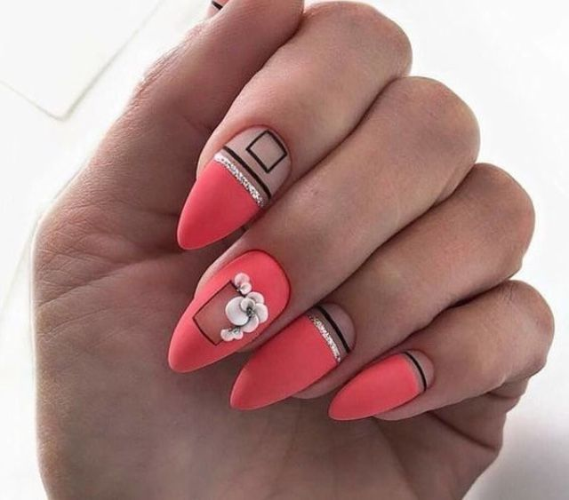
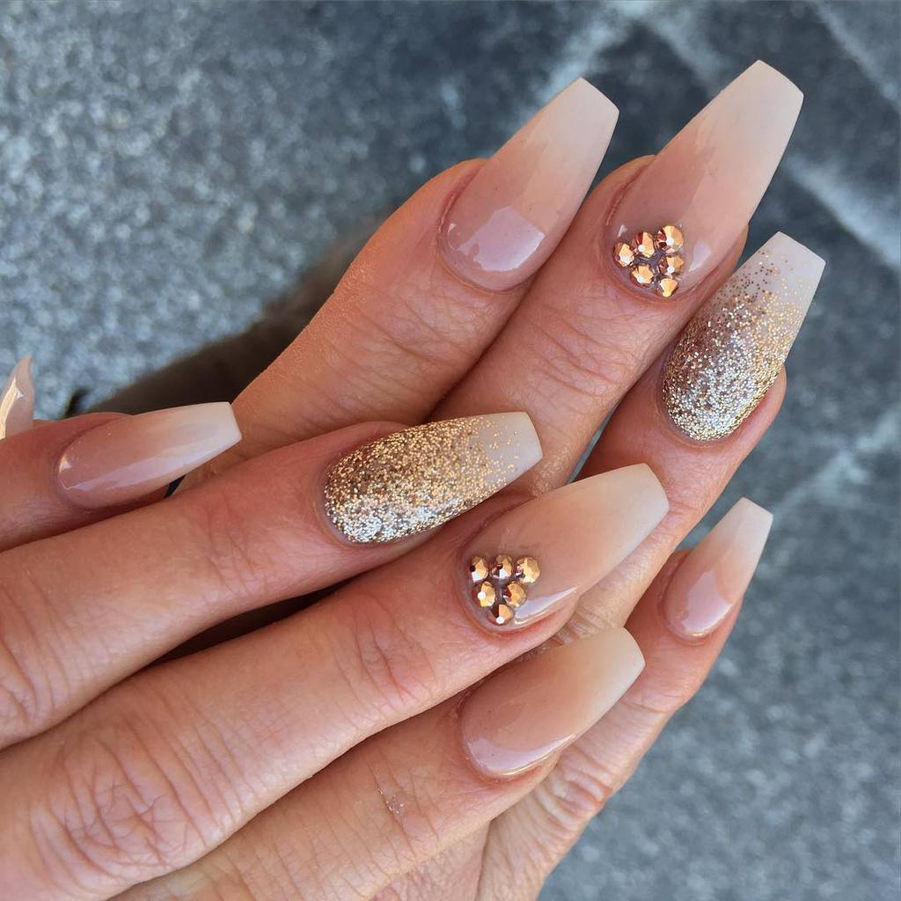

Servicio de uñas

Manicura Rusa
 $1.000
$1.000
Manicura que se realiza en seco, limpiando la zona que rodea la uña en su totalidad, sacando las pieles duras y muertas causadas por la sequedad o por la acidez de la saliva, dejando la zona limpia y libre
Esmaltado Semipermanente
 $1.300
$1.300
Es un esmaltado duradero que brinda una capa de protección, frente a futuros quiebres.
Capping

$1.800
Este tratamiento consiste en cubrir el largo de la uña natural con gel, para darle protección y rigidez. Ideal para las personas que tienen onicofagia (se comen las uñas) que se le quiebran, las tienen escamadas y quieren que crezcan luego se aplica el esmaltado semipermanente dejando la uña perfecta y con una resistencia ideal.
Esculpidas

$2.500
Técina utilizada para las personas que no logran conseguir el largo deseado, brindando asi una uña larga y fuerte.
Recomendaciones:
Usar Guantes.
No usar las uñas como Herramientas.
Evitar el contacto con quimicos y agua muy caliente.
Mientras mas crecimiento tengas mas posibilidad hay que tus uñas se empiecen a desprender y comience a filtrar agua causando hongos o humedad.